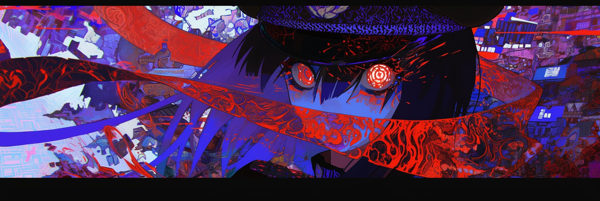

SELECTED WORKS / 01—09
NANASHIARCHIVE
暗闇に咲く、色彩の記録。
FEATURED 02
SCROLL TO EXPLOREVERMILION CORRIDOR
ARCHIVE / 2026
SELECTED
WORKS
黒を余白として、神話・花・静寂を描く。
九つの断片からなる視覚記録。
EXPLORE THE ARCHIVE作品をタップすると全体を表示します
∅
ARTIST STATEMENT
美しいものは、
光の中だけにあるわけじゃない。
BEAUTY DOES NOT
ONLY EXIST IN LIGHT.